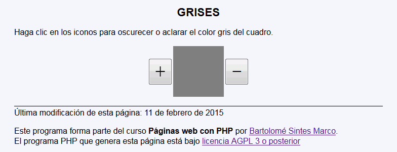
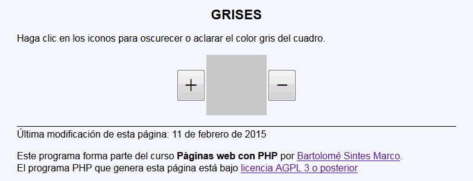

Grises - Ejemplo de programa
Nota: El día del examen los alumnos no tienen acceso a este ejemplo, solamente tienen acceso a las capturas del apartado anterior.
Un ejemplo de programa puede probarse en la ventana siguiente:
En este ejercicio se debe crear un programa que muestre un cuadrado de color gris, cuya intensidad se pueda modificar con dos controles.


<h1>Grises</h1>
<p>Haga clic en los iconos para oscurecer o aclarar el color gris del cuadro.</p>
<form action=" ... " method="get">
<table cellpadding="0" style="margin-left: auto; margin-right: auto;">
<tbody>
<tr>
<td><input type="submit" name="mas" value="+" style="font-size: 300%" /></td>
<td style="width: 100px; height: 100px; background-color: rgb(200, 200, 200)"></td>
<td><input type="submit" name="menos" value="-" style="font-size: 300%" /></td>
</tr>
</tbody>
</table>
<p><input type="hidden" name="gris" value="200" />
</form>
Nota: El día del examen los alumnos no tienen acceso a este ejemplo, solamente tienen acceso a las capturas del apartado anterior.
Un ejemplo de programa puede probarse en la ventana siguiente: